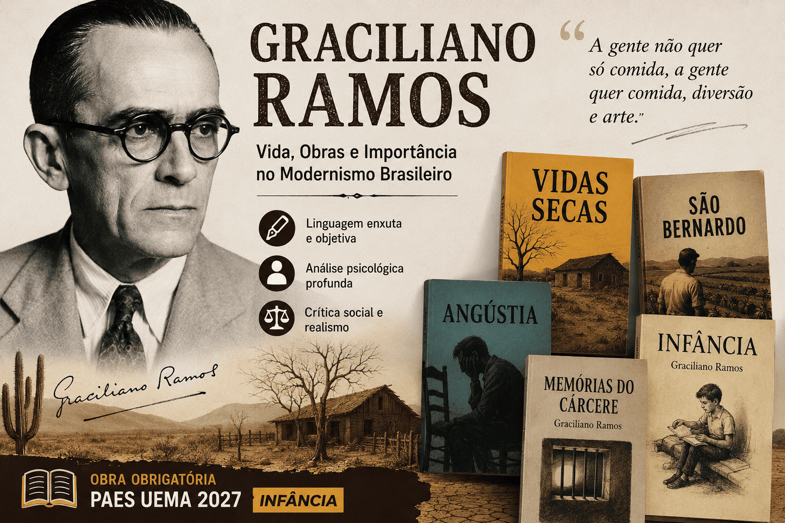

Graciliano Ramos: Biografia, Obras, Características e Importância no Modernismo Brasileiro
Conheça a trajetória de Graciliano Ramos, autor de Vidas Secas, São Bernardo, Angústia e Infância. Entenda suas principais características literárias, sua importância para a Segunda Geração Modernista e a relevância da obra Infância para o PAES UEMA 2027.